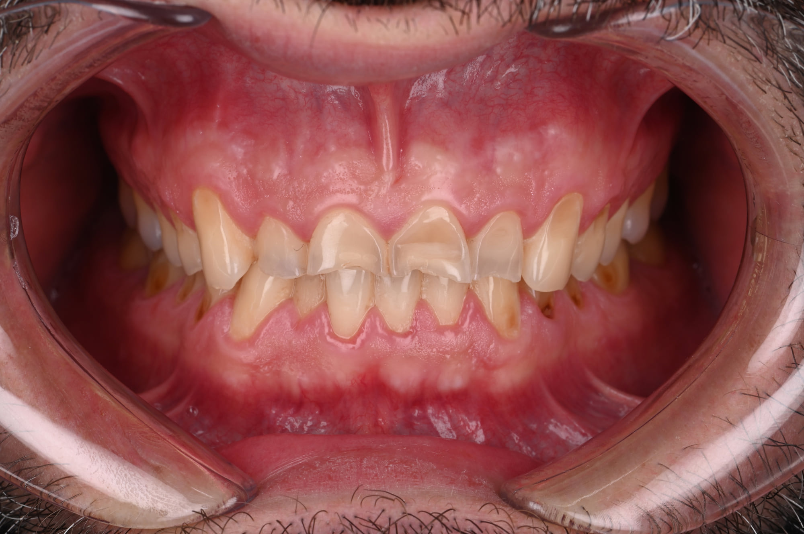
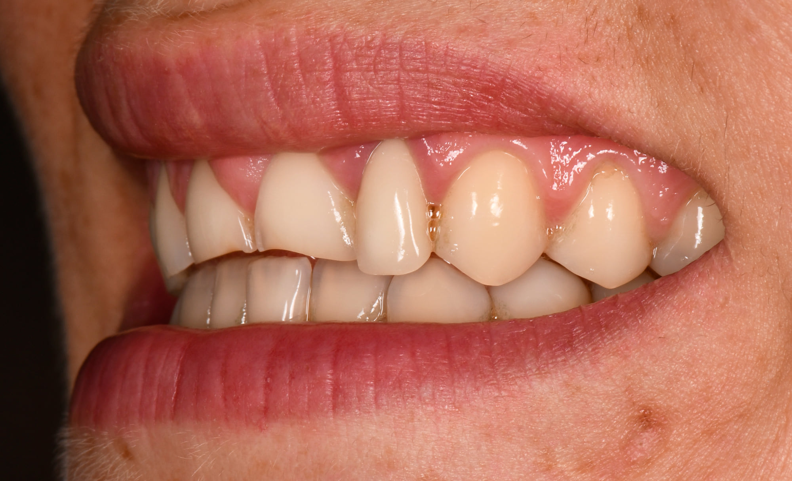

Accueil › Patient › Érosion dentaire
Le sujet
Érosion dentaire
Origines et prévention
L’usure dentaire érosive est un processus chimico-mécanique différent de la carie. Il peut être favorisé par l’alimentation, le reflux, les vomissements, certains médicaments ou un environnement salivaire défavorable. La prise en charge commence par rechercher les causes, réduire les expositions modifiables, renforcer la prévention et surveiller. La restauration n’intervient que lorsque son bénéfice est réel.

Praticien hospitalier, Pitié-Salpêtrière · CMME, Sainte-Anne

1 / 5
Ce qu’est une érosion
L’érosion dentaire est une perte progressive des tissus dentaires dans laquelle des acides non bactériens interagissent avec des facteurs mécaniques. Son dépistage précoce permet d’agir avant qu’une reconstruction importante ne devienne nécessaire.
L’érosion dentaire n’est pas une carie
L’usure dentaire érosive correspond à une perte progressive des tissus dentaires dans laquelle des acides non bactériens jouent un rôle, en interaction avec des facteurs mécaniques. Les consensus actuels la décrivent comme un processus chimico-mécanique.
Elle peut évoluer longtemps sans douleur.
Lorsqu’elle est reconnue tôt, l’objectif est d’abord de : identifier les causes, réduire les expositions, renforcer les facteurs protecteurs et surveiller.
Quels sont les premiers signes ?
Le dépistage précoce est recommandé précisément pour éviter d’attendre une perte importante de substance.
Quels sont les premiers signes ?
- surfaces très lisses ;
- perte de relief ;
- bords incisifs qui deviennent translucides ou irréguliers ;
- creusement de certaines surfaces ;
- exposition progressive de dentine ;
- sensibilités ;
- restaurations qui semblent « dépasser » parce que la dent autour s’est usée.
2 / 5
D’où viennent les acides
D’où viennent les acides ?
Les facteurs salivaires, la fréquence des expositions et les habitudes mécaniques modulent ensuite le risque.
- boissons énergétiques ;
- agrumes ;
- habitudes alimentaires acides ;
- certains compléments ou médicaments acides ;
- exposition professionnelle particulière.
- reflux gastro-œsophagien ;
- régurgitations ;
- vomissements ;
- certains TCA.
Peut-on avoir une érosion sans vomissements ?
Oui
C’est un point essentiel.
Les vomissements augmentent fortement le risque chez certains patients, mais ils ne constituent pas la seule voie menant à une érosion.
L’alimentation, le reflux, le flux salivaire, certains médicaments et les interactions mécaniques peuvent également participer.
Cette distinction est particulièrement importante dans l’anorexie restrictive, où des érosions peuvent être observées même en l’absence de vomissements.
Anorexie restrictive : pourquoi peut-on observer des érosions sans vomissements ?
3 / 5
Dépister tôt
Comment dépiste-t-on l’érosion ?
Le bilan peut associer :
Le BEWE aide au dépistage et à la gradation, mais l’étiologie ne peut pas être déduite d’un score seul.
- interrogatoire ;
- examen des surfaces ;
- photographies ;
- scan numérique ;
- évaluation des facteurs acides ;
- contexte médical ;
- salive lorsque pertinent.
Que peut-on faire avant que les dents ne soient fortement usées ?
La prévention est une vraie prise en charge
L’objectif est de ralentir ou arrêter la progression, ce qui correspond au cœur des recommandations EFCD.
Selon la cause, elle peut comprendre
- réduction de la fréquence des expositions acides évitables ;
- adaptation des habitudes de consommation ;
- investigation médicale d’un reflux ;
- coordination en cas de TCA ;
- amélioration de la protection salivaire ;
- conseils d’hygiène non traumatiques ;
- choix d’un dentifrice fluoré adapté au niveau de risque ;
- surveillance photographique ou numérique.
4 / 5
Protéger au quotidien
Quel dentifrice choisir en cas de risque érosif ?
Tous les dentifrices fluorés n’ont pas exactement le même niveau de données
Une revue de synthèse publiée en 2026 conclut que les dentifrices fluorés réduisent globalement les pertes tissulaires dans les modèles expérimentaux, et que les formulations contenant de l’étain — notamment le fluorure stanneux — présentent la protection expérimentale la plus cohérente contre l’érosion et l’érosion-abrasion.
Cependant, la majorité des données sont encore issues d’études in vitro ou in situ.
On peut donc utiliser cette information pour individualiser le choix du dentifrice, sans prétendre qu’un produit empêche à lui seul la progression clinique d’une érosion.
Et les mousses ou produits reminéralisants ?
Certaines technologies à base de calcium, CPP-ACP, hydroxyapatite ou autres agents biomimétiques sont proposées.
Les données existent mais sont plus hétérogènes. La revue de synthèse 2026 juge les preuves pour ces technologies globalement moins solides que pour les systèmes fluorés à base d’étain dans les modèles anti-érosifs.
Ces produits peuvent donc être discutés au cas par cas mais ne remplacent jamais le contrôle de la cause.
Faut-il attendre avant de se brosser les dents après une exposition acide ?
Les anciennes recommandations proposaient souvent un délai fixe de 30 à 60 minutes.
La littérature récente remet en question le caractère universel de cette règle, particulièrement lorsque le brossage est réalisé avec un dentifrice fluoré.
éviter les gestes agressifs, utiliser une technique douce et adapter les conseils à la situation individuelle plutôt que d’appliquer une règle horaire universelle.
5 / 5
Quand faut-il restaurer ?
Quand faut-il restaurer ?
La restauration devient pertinente notamment lorsque l’érosion entraîne :
Elle doit rester associée à la prévention, car restaurer sans contrôler les facteurs actifs expose à une nouvelle dégradation.
- sensibilités persistantes ;
- perte esthétique importante ;
- fragilisation ;
- altération fonctionnelle ;
- perte importante de structure.

Questions fréquentes
Sa progression peut parfois être fortement réduite ou stabilisée si les facteurs actifs sont identifiés et contrôlés.
Oui. L’érosion dépend notamment de l’acidité, pas uniquement du sucre.
Ce n’est pas une stratégie universelle de prévention de l’érosion. Il faut traiter les causes chimiques et les facteurs de risque.
Oui, un reflux peut être peu symptomatique. Une suspicion doit conduire à une évaluation médicale adaptée.
Oui, notamment grâce aux techniques adhésives contemporaines, une fois le diagnostic et le contrôle des facteurs intégrés au projet.
Une érosion repérée tôt n’a pas la même histoire qu’une érosion découverte tard
Un bilan permet de comprendre la situation et les options possibles, avant tout engagement.
Prendre rendez-vousSources scientifiques
Les références ci-dessous soutiennent les principaux messages cliniques de cette page.
- [1] Carvalho TS, Colon P, Ganss C, et al. Consensus report of the European Federation of Conservative Dentistry: erosive tooth wear—diagnosis and management. Clin Oral Investig. 2015;19(7):1557–1561. — DOI : 10.1007/s00784-015-1511-7 PubMed
- Schlueter N, Amaechi BT, Bartlett D, et al. Terminology of Erosive Tooth Wear: Consensus Report of a Workshop Organized by the ORCA and the Cariology Research Group of the IADR. Caries Res. 2020;54(1):2–6. — DOI : 10.1159/000503308 PubMed
- Carvalho JC, Scaramucci T, Aimée NR, Mestrinho HD, Hara AT. Early diagnosis and daily practice management of erosive tooth wear lesions. Br Dent J. 2018;224(5):311–318. — DOI : 10.1038/sj.bdj.2018.172 PubMed
- Kisely S, Baghaie H, Lalloo R, Johnson NW. Association between poor oral health and eating disorders: systematic review and meta-analysis. Br J Psychiatry. 2015;207(4):299–305. — DOI : 10.1192/bjp.bp.114.156323 PubMed
- Chan CCK, Chen AMC, Lam PPY. Oral health status of individuals with eating disorders: Systematic review and meta-analysis. J Dent. 2024;151:105427. — DOI : 10.1016/j.jdent.2024.105427 PubMed
- Niederau C, Alman E, Rizk M, et al. The influence of anorexia nervosa on oral health and related parameters potentially relevant to orthodontic treatment: a systematic review and meta-analysis. Clin Oral Investig. 2025;29(1):76. — DOI : 10.1007/s00784-024-05774-4 PubMed
- Gómez VC, Diaz-Dosque M, Fernández CE, et al. A comprehensive evidence synthesis of anti-erosive dentifrices: An umbrella review of systematic reviews. J Dent. 2026;168:106608. — DOI : 10.1016/j.jdent.2026.106608 PubMed